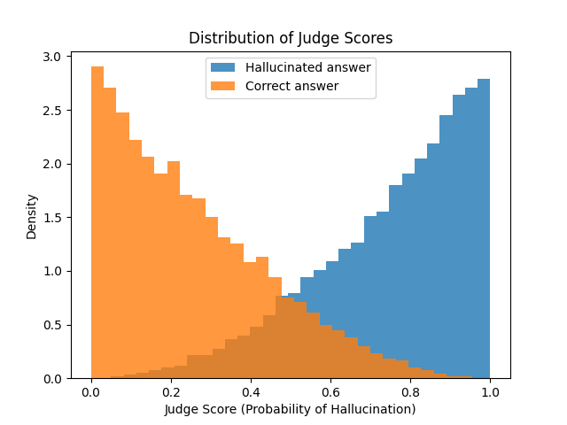
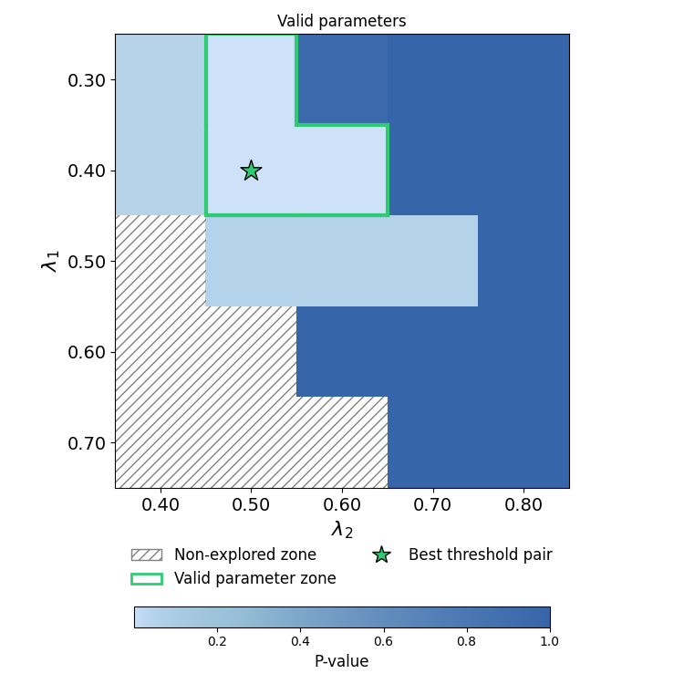

Note
Click here to download the full example code
Risk Control for LLM as a Judge with Abstention¶
This example demonstrates how to use risk control methods for Large Language Models (LLMs) acting as judges. We simulate a scenario where an LLM evaluates answers, and we want to control the risk of hallucination detection. Moreover, we want the judge to abstain from making a decision when it is uncertain.
More precisely, we want the precision of deciding whether an answer is hallucinated or not to be high, while controlling the rate of abstention.
In binary classification terms, this corresponds to finding two thresholds to apply to the model’s predicted probability scores, such that:
- if the score is below the lower threshold, the answer is classified as "not hallucinated",
- if the score is above the upper threshold, the answer is classified as "hallucinated",
- if the score is between the two thresholds, the judge abstains from making a decision.
Hence, we want to control the precision of the non-abstained predictions while minimizing the abstention rate. This procedure falls into the scope of multi-parameter (here two parameters: lower and upper thresholds) and multi-risk (here three risks: precision on the "hallucinated" class, precision on the "not hallucinated" class, and the abstention rate) risk control for binary classification.
# sphinx_gallery_thumbnail_number = 1
import matplotlib.patches as patches
import numpy as np
import pandas as pd
from matplotlib import pyplot as plt
from matplotlib.colors import LinearSegmentedColormap
from matplotlib.lines import Line2D
from matplotlib.patches import Patch
from numpy.typing import NDArray
from sklearn.model_selection import train_test_split
from mapie.risk_control import (
BinaryClassificationController,
abstention_rate,
negative_predictive_value,
positive_predictive_value,
)
RANDOM_STATE = 0
np.random.seed(RANDOM_STATE)
pd.set_option("display.max_colwidth", None)
First, we load HaluEval Question-Answering Data, an open-source dataset for evaluating hallucination in LLMs. Then, we preprocess the data to create a suitable format for our analysis.
url = "https://raw.githubusercontent.com/RUCAIBox/HaluEval/main/data/qa_data.json"
df = pd.read_json(url, lines=True)
print("# Sample of the original dataset:\n")
for col in df.columns:
print(f'"{col}": {df[col].iloc[0]}\n')
# Melt the dataframe to combine right_answer and hallucinated_answer into a single column
df = df.melt(
id_vars=["knowledge", "question"],
value_vars=["right_answer", "hallucinated_answer"],
var_name="answer_type",
value_name="answer",
ignore_index=False, # Keep the original index to allow sorting back to pairs
)
# Sort by index to keep the pairs together (right_answer and hallucinated_answer for
# the same question)
df = df.sort_index()
# Create the 'hallucinated' flag based on the original column name and drop the helper
# column 'answer_type'
df["hallucinated"] = df["answer_type"] == "hallucinated_answer"
df = df.drop(columns=["answer_type"])
df = df.reset_index(drop=True)
# Create judge input prompts
df["judge_input"] = df.apply(
lambda row: f"""
You are a judge evaluating whether an answer to a question is faithful to the
provided knowledge snippet.
Knowledge: {row["knowledge"]}
Question: {row["question"]}
Answer: {row["answer"]}
Does the answer contain information that is NOT supported by the knowledge?
Provide a score between 0.0 and 1.0 indicating the probability that the answer is a
hallucination.
""",
axis=1,
)
# Create synthetic judge scores
def generate_biased_score(is_hallucinated):
"""Generate a biased score based on whether the answer is hallucinated."""
if is_hallucinated:
return np.random.beta(a=3, b=1)
else:
return np.random.beta(a=1, b=3)
# for reproductibility of results across infrastructure
np.random.seed(12)
df["judge_score"] = df["hallucinated"].apply(generate_biased_score)
df = df[["judge_input", "judge_score", "hallucinated"]]
df = df.set_index("judge_input")
print("# Sample of the processed dataset:\n")
print(f'"{df.index.name}": {df.index[0]}')
for col in df.columns:
print(f'"{col}": {df[col].iloc[0]}\n')
Out:
# Sample of the original dataset:
"knowledge": Arthur's Magazine (1844–1846) was an American literary periodical published in Philadelphia in the 19th century.First for Women is a woman's magazine published by Bauer Media Group in the USA.
"question": Which magazine was started first Arthur's Magazine or First for Women?
"right_answer": Arthur's Magazine
"hallucinated_answer": First for Women was started first.
# Sample of the processed dataset:
"judge_input":
You are a judge evaluating whether an answer to a question is faithful to the
provided knowledge snippet.
Knowledge: Arthur's Magazine (1844–1846) was an American literary periodical published in Philadelphia in the 19th century.First for Women is a woman's magazine published by Bauer Media Group in the USA.
Question: Which magazine was started first Arthur's Magazine or First for Women?
Answer: Arthur's Magazine
Does the answer contain information that is NOT supported by the knowledge?
Provide a score between 0.0 and 1.0 indicating the probability that the answer is a
hallucination.
"judge_score": 0.1022181771242157
"hallucinated": False
For demonstration purposes, we simulate the LLM judge's behavior using a simple table-based predictor. In practice, you would replace this with actual LLM API calls to get judge scores or read from a file of judge scores obtained from a complex LangChain pipeline for instance.
class TableBasePredictor:
def __init__(self, df):
self.df = df
def predict_proba(self, X):
score_positive = self.df.loc[X]["judge_score"].values
score_negative = 1 - score_positive
return np.vstack([score_negative, score_positive]).T
llm_judge = TableBasePredictor(df)
plt.figure()
plt.hist(
df[df["hallucinated"]]["judge_score"],
bins=30,
alpha=0.8,
label="Hallucinated answer",
density=True,
)
plt.hist(
df[~df["hallucinated"]]["judge_score"],
bins=30,
alpha=0.8,
label="Correct answer",
density=True,
)
plt.xlabel("Judge Score (Probability of Hallucination)")
plt.ylabel("Density")
plt.title("Distribution of Judge Scores")
plt.legend()
plt.show()

We now split the data into calibration and test sets.
X = df.index.to_numpy() # index is the judge_input
y = df["hallucinated"].astype(int)
X_calib, X_test, y_calib, y_test = train_test_split(
X, y, test_size=0.95, random_state=RANDOM_STATE
)
Next, we define a multi-parameter prediction function.
- If the predicted score of the positive class is below a lower threshold
lambda_1, the answer is classified as not hallucinated. - If the predicted score is above an upper threshold
lambda_2, the answer is classified as hallucinated. - If the score lies between
lambda_1andlambda_2, the judge abstains from making a decision.
def abstain_to_answer(X, lambda_1, lambda_2) -> NDArray[np.int_]:
"""Predict function with abstention based on two thresholds.
- if the score is below `lambda_1`, predict 0 (not hallucinated)
- if the score is above `lambda_2`, predict 1 (hallucinated)
- if the score is between `lambda_1` and `lambda_2`, abstain (np.nan)
"""
y_score = llm_judge.predict_proba(X)[:, 1]
y_pred = np.full_like(y_score, np.nan)
y_pred = np.where(y_score <= lambda_1, 0, y_pred)
y_pred = np.where(y_score >= lambda_2, 1, y_pred)
return y_pred
Given the abstention task and the definition of abstain_to_answer, we must
enforce the constraint lambda_1 <= lambda_2. Therefore, we avoid exploring
regions of the bi-variate parameter space where lambda_1 > lambda_2.
We construct a grid of parameter pairs that respects this constraint.
n_lambdas = 5
lambda_1_values = np.linspace(0.3, 0.7, n_lambdas)
lambda_2_values = np.linspace(0.4, 0.8, n_lambdas)
to_explore = []
for lambda_1 in lambda_1_values:
for lambda_2 in lambda_2_values:
if lambda_2 >= lambda_1:
to_explore.append((lambda_1, lambda_2))
to_explore = np.array(to_explore)
We now initialize a BinaryClassificationController
using the abstain_to_answer prediction function and three specific risks, each
represented as an instance of BinaryClassificationRisk:
negative_predictive_value: precision (NPV) on class 0 ("not hallucinated"),positive_predictive_value: precision (PPV) on class 1 ("hallucinated"),abstention_rate: proportion of abstentions (i.e., np.nan predictions).
We set a target level for each risk and use the calibration data to compute statistically guaranteed thresholds. Among the valid thresholds, we select the one that minimizes the abstention rate, thereby reducing the need for human manual review.
target_negative_predictive_value = 0.85
target_positive_predictive_value = 0.8
target_abstention_rate = 0.2
confidence_level = 0.9
bcc = BinaryClassificationController(
predict_function=abstain_to_answer,
risk=["negative_predictive_value", "positive_predictive_value", "abstention_rate"],
target_level=[
target_negative_predictive_value,
target_positive_predictive_value,
target_abstention_rate,
],
confidence_level=confidence_level,
best_predict_param_choice="abstention_rate",
list_predict_params=to_explore,
)
bcc.calibrate(X_calib, y_calib)
print(
f"{len(bcc.valid_predict_params)} two-dimensional parameters found that guarantee with a confidence of {confidence_level}:\n"
f"- precision of at least {target_negative_predictive_value} for predicting not hallucinated,\n"
f"- precision of at least {target_positive_predictive_value} for predicting hallucinated, and\n"
f"- an abstention rate of at most {target_abstention_rate}.\n\n"
f"Among these, the best thresholds that minimizes the abstention rate are:\n"
f"- lambda_1 = {bcc.best_predict_param[0]:.2f},\n"
f"- lambda_2 = {bcc.best_predict_param[1]:.2f}"
)
Out:
3 two-dimensional parameters found that guarantee with a confidence of 0.9:
- precision of at least 0.85 for predicting not hallucinated,
- precision of at least 0.8 for predicting hallucinated, and
- an abstention rate of at most 0.2.
Among these, the best thresholds that minimizes the abstention rate are:
- lambda_1 = 0.40,
- lambda_2 = 0.50
Below, we visualize the p-values associated with each explored parameter pair. The valid parameter region and the optimal parameter pair are highlighted.
# Build p-values matrix
matrix = np.full((n_lambdas, n_lambdas), np.nan)
for idx, (l1, l2) in enumerate(to_explore):
row = np.argmin(np.abs(lambda_1_values - l1))
col = np.argmin(np.abs(lambda_2_values - l2))
matrix[row, col] = bcc.p_values[idx, 0]
# Build valid thresholds mask
valid_matrix = np.zeros((n_lambdas, n_lambdas), dtype=int)
for l1, l2 in bcc.valid_predict_params:
row = np.argmin(np.abs(lambda_1_values - l1))
col = np.argmin(np.abs(lambda_2_values - l2))
valid_matrix[row, col] = 1
# Plot p-value matrix
fig, ax = plt.subplots(figsize=(7.5, 7.5))
colors = ["#cde2f9", "#96bfd7", "#3765a9"]
cmap = LinearSegmentedColormap.from_list("custom_blue", colors, gamma=0.5)
masked_matrix = np.ma.masked_invalid(matrix)
im = ax.imshow(masked_matrix, cmap=cmap, interpolation="nearest")
for i in range(n_lambdas):
for j in range(n_lambdas):
if np.isnan(matrix[i, j]):
rect = patches.Rectangle(
(j - 0.5, i - 0.5),
1,
1,
hatch="///",
facecolor="none",
edgecolor="grey",
linewidth=0,
)
ax.add_patch(rect)
# Add valid parameters area shape
for i in range(n_lambdas):
for j in range(n_lambdas):
if valid_matrix[i, j] == 1:
neighbors = [(i - 1, j), (i + 1, j), (i, j - 1), (i, j + 1)]
if i - 1 < 0 or valid_matrix[i - 1, j] == 0:
ax.plot([j - 0.5, j + 0.5], [i - 0.5, i - 0.5], color="#2ecc71", lw=3)
if i + 1 >= n_lambdas or valid_matrix[i + 1, j] == 0:
ax.plot([j - 0.5, j + 0.5], [i + 0.5, i + 0.5], color="#2ecc71", lw=3)
if j - 1 < 0 or valid_matrix[i, j - 1] == 0:
ax.plot([j - 0.5, j - 0.5], [i - 0.5, i + 0.5], color="#2ecc71", lw=3)
if j + 1 >= n_lambdas or valid_matrix[i, j + 1] == 0:
ax.plot([j + 0.5, j + 0.5], [i - 0.5, i + 0.5], color="#2ecc71", lw=3)
# Add best predict param as a star
best_l1, best_l2 = bcc.best_predict_param
row_idx = np.argmin(np.abs(lambda_1_values - best_l1))
col_idx = np.argmin(np.abs(lambda_2_values - best_l2))
ax.scatter(
col_idx,
row_idx,
c="#2ecc71",
marker="*",
edgecolors="k",
s=300,
label="Best threshold pair",
)
# Set up axes, theme and legend
ax.set_xlabel(r"$\lambda_2$", fontsize=16)
ax.set_ylabel(r"$\lambda_1$", fontsize=16)
ax.set_title(
"P-values per parameter pair\nwith valid parameter zone highlighted", fontsize=16
)
ax.set_xticks(range(n_lambdas))
ax.set_xticklabels([f"{val:.2f}" for val in lambda_2_values], fontsize=14)
ax.set_yticks(range(n_lambdas))
ax.set_yticklabels([f"{val:.2f}" for val in lambda_1_values], fontsize=14)
cbar = plt.colorbar(im, ax=ax, orientation="horizontal", pad=0.2, fraction=0.035)
cbar.set_label("P-value", fontsize=12)
legend_elements = [
Patch(facecolor="none", edgecolor="grey", hatch="///", label="Non-explored zone"),
Patch(facecolor="none", edgecolor="#2ecc71", label="Valid parameter zone", lw=2),
Line2D(
[0],
[0],
marker="*",
color="w",
label="Best threshold pair",
markerfacecolor="#2ecc71",
markeredgecolor="k",
markersize=15,
),
]
ax.legend(
handles=legend_elements,
loc="lower center",
bbox_to_anchor=(0.5, -0.25),
ncol=2,
fontsize=12,
frameon=False,
)
plt.tight_layout()
plt.show()
ax.set_ylabel(r"$\lambda_1$", fontsize=16)
ax.set_title("Valid parameters")
fig.tight_layout()
plt.show()

Finally, we compare the performance of the risk-controlled thresholds with a naive approach that selects thresholds based solely on empirical performance on the calibration set.
Similarly to the risk-controlled approach, the naive method explores all parameter pairs in the defined grid, computes the empirical risks on the calibration set, and selects the best feasible parameter pair that meets the target risk levels while minimizing the abstention rate.
That comes down to selecting the parameter pair that minimizes the abstention rate on the calibration set among those that satisfy the following empirical constraints:
- empirical precision on class 0 >= target_negative_predictive_value,
- empirical precision on class 1 >= target_positive_predictive_value,
- empirical abstention rate <= target_abstention_rate.
We then evaluate both approaches on the test set and display the results.
def perf(risk, y_true, y_pred):
val, _ = risk.get_value_and_effective_sample_size(y_true, y_pred)
return 1 - val if risk.higher_is_better else val
def compute_risks(y_true, y_pred):
return {
"positive_predictive_value": perf(positive_predictive_value, y_true, y_pred),
"negative_predictive_value": perf(negative_predictive_value, y_true, y_pred),
"abstention_rate": perf(abstention_rate, y_true, y_pred),
}
# Compute performance for all thresholds on the calibration set
y_calib = y_calib.to_numpy()
y_test = y_test.to_numpy()
y_preds = np.array([abstain_to_answer(X_calib, l1, l2) for l1, l2 in to_explore])
emp_risks = np.array([compute_risks(y_calib, y_pred) for y_pred in y_preds])
emp_positive_predictive_value = np.array(
[r["positive_predictive_value"] for r in emp_risks]
)
emp_negative_predictive_value = np.array(
[r["negative_predictive_value"] for r in emp_risks]
)
abstention_rate_calib = np.array([r["abstention_rate"] for r in emp_risks])
# Identify feasible parameter pairs for the naive approach
feasible_mask = (
(emp_positive_predictive_value >= target_positive_predictive_value)
& (emp_negative_predictive_value >= target_negative_predictive_value)
& (abstention_rate_calib <= target_abstention_rate)
)
# Select the naive threshold pair that minimizes abstention rate
feasible_indices = np.where(feasible_mask)[0]
best_feasible_idx = feasible_indices[np.argmin(abstention_rate_calib[feasible_indices])]
naive_lambda_1, naive_lambda_2 = to_explore[best_feasible_idx]
# Compute predictions using both naive and risk-controlled thresholds
y_calib_pred_naive = abstain_to_answer(X_calib, naive_lambda_1, naive_lambda_2)
y_test_pred_naive = abstain_to_answer(X_test, naive_lambda_1, naive_lambda_2)
y_calib_pred_controlled = bcc.predict(X_calib)
y_test_pred_controlled = bcc.predict(X_test)
# Compute risk values for all cases
naive_calib = compute_risks(y_calib, y_calib_pred_naive)
naive_test = compute_risks(y_test, y_test_pred_naive)
ctrl_calib = compute_risks(y_calib, y_calib_pred_controlled)
ctrl_test = compute_risks(y_test, y_test_pred_controlled)
# Summarize results in a table format
ctrl_summary = pd.DataFrame(
{
"Calibration": ctrl_calib,
"Test": ctrl_test,
}
)
naive_summary = pd.DataFrame(
{
"Calibration": naive_calib,
"Test": naive_test,
}
)
# Print thresholds and tables
print(
f"\nNaive thresholds (lambda_1, lambda_2) = ({naive_lambda_1:.2f}, {naive_lambda_2:.2f})"
)
print(
f"Risk-controlled thresholds (lambda_1, lambda_2) = ({bcc.best_predict_param[0]:.2f}, {bcc.best_predict_param[1]:.2f})\n"
)
print("Risk-controlled thresholds performance")
print(ctrl_summary.round(3))
print("\nNaive thresholds performance")
print(naive_summary.round(3))
Out:
Naive thresholds (lambda_1, lambda_2) = (0.40, 0.40)
Risk-controlled thresholds (lambda_1, lambda_2) = (0.40, 0.50)
Risk-controlled thresholds performance
Calibration Test
positive_predictive_value 0.896 0.873
negative_predictive_value 0.932 0.929
abstention_rate 0.080 0.081
Naive thresholds performance
Calibration Test
positive_predictive_value 0.828 0.806
negative_predictive_value 0.932 0.929
abstention_rate 0.000 0.000
In this example, the naive thresholds choose an abstention rate of 0% at the cost of a low margin on positive_predictive_value.
Indeed, the naive approach may select thresholds that fail to meet the desired risk levels on unseen data. In contrast, the risk-controlled approach takes a margin which provides formal statistical guarantees on precision and abstention, making it more reliable in practice.
Total running time of the script: ( 0 minutes 1.029 seconds)
Download Python source code: plot_risk_control_llm_as_a_judge.py
Download Jupyter notebook: plot_risk_control_llm_as_a_judge.ipynb